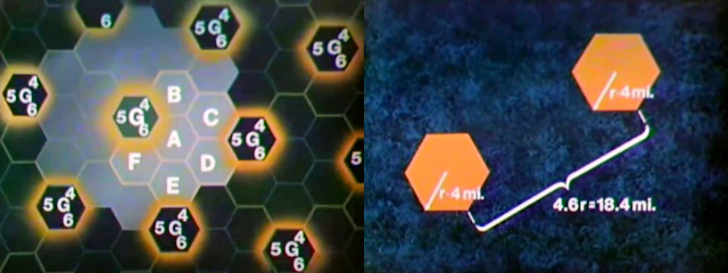
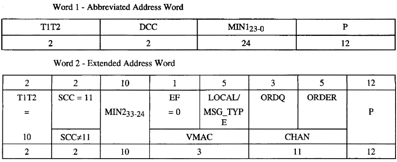
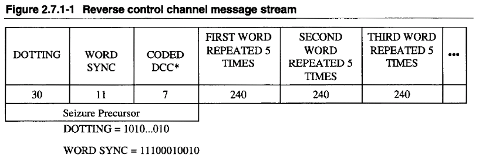
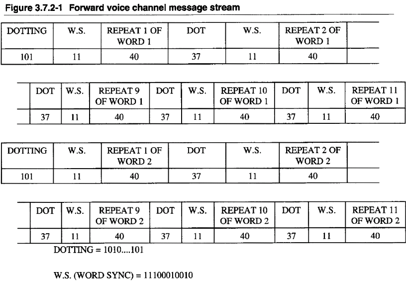

AMPS

History
The Advanced Mobile Phone Service (AMPS) was an analog cellular mobile phone system developed by Bell Labs.
From 1968 to 1983 the Bell Labs worked out the system, while Motorola was developing the cellular phone.
Dr. Martin Cooper produced the first handheld phone "DynaTAC8000x", the famous Brick Phone.
 Image taken from Wikipedia
Image taken from Wikipedia
AMPS was one of the first modern cellular phone systems, which remained in operation until 2008.
Service started in Chicago on October 13, 1983 and in the Washington, DC area December 1983.
After divestiture, AMPS was divided among the 7 newly created Regional Holding Companies, now known as RBOCs.
- Frequency range base station: 869.040 MHz - 893.970 MHz
- Frequency range mobile station: 824.040 MHz - 848.970 MHz
- Control channels: 21 for System A
- Voice channels: 395 for System A (formerly 312)
- Control channels: 21 for System B
- Voice channels: 395 for System B (formerly 312)
- Duplex distance: 45 MHz
- Channel spacing: 30 KHz
- Voice modulation: FM
- Signaling modulation: carrier FSK
- Frequency deviation: 8 KHz (FSK)
- Mobile station transmit power: 4 Watts (vehicular) 1.6 or 0.6 Watts
- Base station transmit power: ??? (around 50 Watts)
How it works
The detailed communication between base station and mobile station is described in TIA/EIA-553 standard.
Click for reading the PDF file.
Thanks to TIA for allowing me to add the standard document to this project's documentation.
Reproduced under written permission from Telecommunications Industry Association.

The idea a cellular network was to use clusters to re-use frequencies more ofter, so more calls can be made in one area.
As depicted, in a cluster with 7 cells (A to G), all cells must use different frequencies.
All frequencies can be re-used in surrounding clusters.
In the example, the G cell can use channel 4, 5 and 6 again in all other clusters, because their distance is far enough.
As depicted, the distance is 4.6 times the radius of a cell coverage.
To increase the number of calls using the same number of channels, the size of the cells have to be reduced.
Because cells getting smaller, hand-off is required when moving from one cell area to another.
A phone in a smaller cell must transmit with lower power than in large cells.
To keep track in which cell the phone currently located, a registration process tells the mobile switching office (MSO) where the phone can be reached in case of an incoming call.
Registering, power control and handoff are the key features of a cellular network.
An AMPS network is divided into two systems, System A and System B.
Both systems have different radio channels.
System A was assigned to carriers that own no fixed network. (non-wireline)
System B was assigned to carriers that are phone companies with a fixed network. (wireline)
Each system has a system ID (SID).
A SID defines the home network.
If it does not match with the phone's SID, the phone will show 'ROAM', if not disabled.
If the SID is odd (1, 3, 5, ...), it belongs to System A.
If the SID is even (2, 4, 6, ...), it belongs to System B.
The System A or B or both can be selected on the phone.
To reduce radio noise, a syllabic compandor is used on both ends.
This compresses the audio level dynamics by 2.
An audio level of 25% is raised to 50% by the compressor and lowered to 25% by the expander.
A radio noise floor of 10% would be reduced to 1% by the expander.
The signaling is done with Manchester Code.
The symbol rate is 10,000 Hz, resulting in a frequency of 10 KHz.
To allow such high frequencies, the carrier frequency is directly shifted, instead of modulating two alternating tones.

As depicted, each frame that is sent on the control channel of a base station,
starts with a dotting sequence (1010101...) to sync the receiver
and a sync word (11100010010) to indicate start of message.
Two words of 40 bits are repeated 5 times for redundancy.
An A-word belongs to mobiles with the last significant bit of their mobile identification number equals '1' and a B-word to mobiles with the last significant bit of their mobile identification number equals '0'.
Around sync and dotting and after every 10 bits of a message a B/I-bit is inserted, to indicate if the control channel is busy or not.
During an incoming message from a mobile phone, the base station will block the channels by setting the B/I-bit, so other mobile phone must wait until the channel is marked free again.
The bad news is, that the base station must react in less than 5 milliseconds, which is too fast for Osmocom-Analog.
The good news is, that this feature can be turned off.

This example shows two words that are used to call a mobile phone.
Each word consists of different bits, except for the last 12 bits.
They are used for parity check, resulting in 28 usable bit for the message itself.
Other words are used to broadcast cell info of the base station.

The other direction is similar, but the size of the messages are different.
After dotting sequence and sync word, a digital color code (DCC) is used to prevent cells in surrounding clusters to receive the message from the mobile phone.
The size of each word is 48 bits.
These include the 36-bits-message and the 12 parity bits.

On a voice channel, the messages have even more redundancy, by repeating them 11 times.
Describing all messages with their function and their content is beyond the scope of this introduction.
Refer to the TIA specification, described above.
Setup of a base station
Importaint: We need to connect to PLL and discriminator!
AMPS does not use a modulated tone to carry bits of information, instead it modulates the radio carrier directly.
This image shows a signal generated by this software, which is similar to a received signal from the phone:

Generally a receiver will do de-emphasis and filtering after demodulating the signal.
We don't want that.
It may work, but be sure to use a receiver with discriminator output.
This output gives direct signal of the frequency deviation of the received signal.
The signal on the sound card represents the frequency shift of the received signal.
Many receivers can be modified, so search the Web for more info.
On the transmitter we don't want to have filtering and pre-emphasis.
It may work, but be sure to use a transmitter that allows to disable emphasis.
I took the schematics of my transmitter and connected the sound card directly to the PLL.
The transmitter will now shift frequency according the the level of the sound card.
Importaint: We need to transmit correct polarity!
In my case, my sound card is connected to a transmitter, where a positive sample value causes a negative frequency deviation.
This is why I need to flip the polarity of the signal, so I generate a negative sample value that causes a positive frequency deviation.
I use the '-F yes' option or '--flip-polarity yes'.
Also it is essential to use a transmitter with direct access to the modulator and and a receiver with direct access to the discriiminator.
I use '-p -d' or '--pre-emphasis --de-emphasis' to process emphasis for audio signal in software.
I use the calling channel (control channel) 334, which could also be used as traffic channel (voice channel).
# amps -k 334 -F yes -p -d
...
Selected System ID (SID) 40 belongs to:
Salinas, CA (GTE Mobile)
San Francisco, CA (GTE Mobile)
San Jose, CA (GTE Mobile)
San Rosa, CA (GTE Mobile)
Santa Barbara, CA (GTE Mobile)
amps.c:531 notice : You selected 'combined control & paging & voice channel'.
This is a hack, but the only way to use control channel and voice channel on one transceiver.
Some phones may reject this, but all my phones don't.
amps.c:632 info : Entering IDLE state, sending Overhead/Filler frames on combined control & paging
& voice channel.
dsp.c:909 info : Change mode to FOCC
amps.c:585 notice : Created channel #334 (System B) of type 'CC/PC/VC' = combined control & paging
& voice channel
Base station on channel 334 ready (combined control & paging & voice channel),
please tune transmitter to 880.020 MHz and receiver to 835.020 MHz.
# tacs -k 323 -F yes -p -d
...
Selected Area ID (AID) 3600 belongs to:
CellNet, United Kingdom
amps.c:531 notice : You selected 'combined control & paging & voice channel'.
This is a hack, but the only way to use control channel and voice channel on one transceiver.
Some phones may reject this, but all my phones don't.
amps.c:632 info : Entering IDLE state, sending Overhead/Filler frames on combined control & paging
& voice channel.
dsp.c:909 info : Change mode to FOCC
amps.c:585 notice : Created channel #323 (System B) of type 'CC/PC/VC' = combined control & paging
& voice channel
Base station on channel 323 ready (combined control & paging & voice channel),
please tune transmitter to 943.0625 MHz and receiver to 898.0625 MHz.
You should tune the receiver to 880.020 first, to check if you can hear and decode the idle signal from the base station.
Then tune to actually up-link frequency 835.020 MHz.
The actual level is not yet relevant.
(You may check the quality using '-l 2' or '--loopback 2' command line option and build a radio loop by tuning the receiver to the transmitter.)
If the polarity is correct and the volume of the signal (frequency deviation) is about right, you will make the phone register.
The phone will transmit on the up-link.
If not, try other polarity.
Also check if the phone allows to register on the selected system (A or B) and allowed to roam (any SID/AID).
This is how my phone registers to my network:
frame.c:3711 info : RX Level: 93% Quality: 99% Polarity: POSITIVE
frame.c:3680 info : RX RECC: DCC=0 (5 of 5 CRCs are ok)
frame.c:3059 info : Received: Word A - Abbreviated Address Word
frame.c:3322 info : expecting 2 more word(s) to come
frame.c:3688 info : RX RECC: (5 of 5 CRCs are ok)
frame.c:3059 info : Received: Word B - Extended Address Word
frame.c:3322 info : expecting 1 more word(s) to come
frame.c:3688 info : RX RECC: (5 of 5 CRCs are ok)
frame.c:3059 info : Received: Word C - Serial Number Word
frame.c:3322 info : expecting 0 more word(s) to come
amps.c:793 info : Registration 617XXXXXXX (ESN = 8a376086, Class 1 / Continuous / 25 MHz, TIA/EIA-553
or IS-54A mobile station)
amps.c:799 info : -> Home country: USA
amps.c:801 info : -> Home number: 617XXXXXXX
transaction.c:245 info : Transaction state IDLE -> REGISTER ACK
transaction.c:150 info : Created transaction for subscriber '617XXXXXXX'
amps.c:1142 info : Sending Register acknowledge
transaction.c:245 info : Transaction state REGISTER ACK -> REGISTER ACK SEND
frame.c:2739 info : Transmit: Word 1 - Abbreviated Address Word
frame.c:2739 info : Transmit: Word 2 - Extended Address Word (SCC == 11)
frame.c:2739 info : Transmit: Word 1 - Abbreviated Address Word
frame.c:2739 info : Transmit: Word 2 - Extended Address Word (SCC == 11)
frame.c:2739 info : Transmit: Word 1 - Abbreviated Address Word
frame.c:2739 info : Transmit: Word 2 - Extended Address Word (SCC == 11)
transaction.c:163 info : Destroying transaction for subscriber '617XXXXXXX'
transaction.c:245 info : Transaction state REGISTER ACK SEND -> IDLE
After some time (several minutes), the phone re-registers, because a counter in the broadcast message is incremented.
This allows the mobile switching office (MSO) to check if the phone is still available.
Changing the SID will cause the phone to register instantaneously.
Level adjustment:
We see a receive level of around 93%.
This is already good, since I did the adjustment previously.
Tune your receiver to the up-link frequency, so you get loop-back of base station broadcast.
Run the software with "-l 2" option, so it will decode its own broadcast, if looped back through radios.
Use the variable resistor (connecting your transmitter) to adjust the volume until the received level matches the same level of your previously received message.
In my case I adjust the transmitter to match around 93%. (+- 10% is good)
Now, whatever frequency deviation the phone transmits for signaling, so does your transmitter.
Use the other variable resistor (connecting your receiver) to adjust the volume until the level matches about 100%. (+- 10% is good)
Switch back the receiver to up-link frequency and restart the phone.
To make a call from the mobile phone to the base station, just enter some digits at the mobile phone and press the dial button.
The phone requests an outgoing call on the reverse control channel (RECC), including identity and called number.
The base station will send an assignment to the mobile station on forward control channel (FOCC).
Then phone an base station switch to the voice channel.
In this case we have only defined one channel, so the control channel becomes a voice channel for the duration of the call.
All other phones will loose coverage during the call.
frame.c:3711 info : RX Level: 91% Quality: 96% Polarity: POSITIVE
frame.c:3680 info : RX RECC: DCC=0 (5 of 5 CRCs are ok)
frame.c:3059 info : Received: Word A - Abbreviated Address Word
frame.c:3322 info : expecting 3 more word(s) to come
frame.c:3688 info : RX RECC: (5 of 5 CRCs are ok)
frame.c:3059 info : Received: Word B - Extended Address Word
frame.c:3322 info : expecting 2 more word(s) to come
frame.c:3688 info : RX RECC: (5 of 5 CRCs are ok)
frame.c:3059 info : Received: Word C - Serial Number Word
frame.c:3322 info : expecting 1 more word(s) to come
frame.c:3688 info : RX RECC: (5 of 5 CRCs are ok)
frame.c:3059 info : Received: Word D - First Word of the Called-Address (Origination - Voice Service)
frame.c:3322 info : expecting 0 more word(s) to come
amps.c:816 info : Call 617XXXXXXX -> 9200 (ESN = 8a376086, Class 1 / Continuous / 25 MHz, TIA/EIA-553
or IS-54A mobile station)
transaction.c:245 info : Transaction state IDLE -> CALL ASSIGN MOBILE ORIGINATING
transaction.c:150 info : Created transaction for subscriber '617XXXXXXX'
amps.c:1156 info : Assigning channel to call from mobile station
transaction.c:245 info : Transaction state CALL ASSIGN MOBILE ORIGINATING -> CALL ASSIGN MOBILE ORIGINATING SEND
frame.c:2739 info : Transmit: Word 1 - Abbreviated Address Word
frame.c:2739 info : Transmit: Word 2 - Extended Address Word (SCC != 11)
frame.c:2739 info : Transmit: Word 1 - Abbreviated Address Word
frame.c:2739 info : Transmit: Word 2 - Extended Address Word (SCC != 11)
frame.c:2739 info : Transmit: Word 1 - Abbreviated Address Word
frame.c:2739 info : Transmit: Word 2 - Extended Address Word (SCC != 11)
amps.c:1104 info : Staying on combined control + voice channel 334
amps.c:1109 info : Setup call to network.
call.c:765 info : Incoming call from '617XXXXXXX' to '9200'
call.c:790 info : Sending MNCC call towards Network
amps.c:1162 info : Assignment complete, voice connected
transaction.c:245 info : Transaction state CALL ASSIGN MOBILE ORIGINATING SEND -> CALL
dsp.c:915 info : Change mode from FOCC to FVC
dsp.c:762 notice : SAT level 101.56% quality 96%
dsp.c:762 notice : SAT level 100.97% quality 97%
dsp.c:762 notice : SAT level 102.29% quality 96%
dsp.c:762 notice : SAT level 102.31% quality 96%
dsp.c:762 notice : SAT level 102.00% quality 96%
amps.c:739 info : Detected SAT signal with quality=96.
dsp.c:762 notice : SAT level 102.04% quality 96%
dsp.c:762 notice : SAT level 102.26% quality 96%
The SAT shows us that the level of the voice channel is right.
If a second transceiver for voice channel is used, adjust receiver to receive sat 100% (+- 10).
Then switch the receiver to the transmitter frequency and adjust transmitted SAT level to 100% (+-10.
If the mobile station hangs up, the phone transmits a signaling tone of 10 KHz:
amps.c:525 info : Detected Signaling Tone with quality=100.
transaction.c:117 info : Destroying transaction for subscriber '617XXXXXXX'
transaction.c:175 info : Transaction state CALL -> IDLE
call.c:711 info : Call has been released with cause=16
amps.c:481 info : Entering IDLE state, sending Overhead/Filler frames on combined control & paging
& voice channel.
The make a call to the phone, enter the number and press 'd' to dial.
The base station will page the mobile phone on forward control channel (FOCC).
The mobile phone will identify itself on the reverse control channel (RECC).
The base station will send an assignment to the mobile station on forward control channel.
Then phone an base station switch to the voice channel.
The base station sends rinign order message on the forward voice channel (FVC) to make the phone ring.
The mobile station will send signaling tone on reverse voice channel (RVC) to indicate that it has not been answered yet.
call.c:594 info : Outgoing call to 617XXXXXXX
amps.c:929 info : Call to mobile station, paging station id '617XXXXXXX'
transaction.c:245 info : Transaction state IDLE -> PAGE
transaction.c:150 info : Created transaction for subscriber '617XXXXXXX'
amps.c:1184 info : Paging the phone
transaction.c:245 info : Transaction state PAGE -> PAGE SEND
frame.c:2739 info : Transmit: Word 1 - Abbreviated Address Word
frame.c:2739 info : Transmit: Word 2 - Extended Address Word (SCC == 11)
frame.c:2739 info : Transmit: Word 1 - Abbreviated Address Word
frame.c:2739 info : Transmit: Word 2 - Extended Address Word (SCC == 11)
frame.c:2739 info : Transmit: Word 1 - Abbreviated Address Word
frame.c:2739 info : Transmit: Word 2 - Extended Address Word (SCC == 11)
transaction.c:245 info : Transaction state PAGE SEND -> PAGE REPLY
frame.c:3711 info : RX Level: 90% Quality: 95% Polarity: POSITIVE
frame.c:3680 info : RX RECC: DCC=0 (5 of 5 CRCs are ok)
frame.c:3059 info : Received: Word A - Abbreviated Address Word
frame.c:3322 info : expecting 2 more word(s) to come
frame.c:3688 info : RX RECC: (5 of 5 CRCs are ok)
frame.c:3059 info : Received: Word B - Extended Address Word
frame.c:3322 info : expecting 1 more word(s) to come
frame.c:3688 info : RX RECC: (5 of 5 CRCs are ok)
frame.c:3059 info : Received: Word C - Serial Number Word
frame.c:3322 info : expecting 0 more word(s) to come
amps.c:814 info : Paging reply 617XXXXXXX (ESN = 8a376086, Class 1 / Continuous / 25 MHz, TIA/EIA-553
or IS-54A mobile station)
transaction.c:245 info : Transaction state PAGE REPLY -> CALL ASSIGN MOBILE TERMINATING
amps.c:1168 info : Assigning channel to call to mobile station
transaction.c:245 info : Transaction state CALL ASSIGN MOBILE TERMINATING -> CALL ASSIGN MOBILE TERMINATING SEND
frame.c:2739 info : Transmit: Word 1 - Abbreviated Address Word
frame.c:2739 info : Transmit: Word 2 - Extended Address Word (SCC != 11)
frame.c:2739 info : Transmit: Word 1 - Abbreviated Address Word
frame.c:2739 info : Transmit: Word 2 - Extended Address Word (SCC != 11)
frame.c:2739 info : Transmit: Word 1 - Abbreviated Address Word
frame.c:2739 info : Transmit: Word 2 - Extended Address Word (SCC != 11)
amps.c:1104 info : Staying on combined control + voice channel 334
amps.c:1174 info : Assignment complete, next: sending alerting on VC
transaction.c:245 info : Transaction state CALL ASSIGN MOBILE TERMINATING SEND -> CALL ALERT MOBILE TERMINATING
dsp.c:915 info : Change mode from FOCC to FVC
amps.c:1216 info : Sending alerting
frame.c:2739 info : Transmit: Mobile Station Control Message Word 1 (SCC == 11)
dsp.c:762 notice : SAT level 101.24% quality 98%
dsp.c:762 notice : SAT level 101.47% quality 95%
amps.c:1216 info : Sending alerting
frame.c:2739 info : Transmit: Mobile Station Control Message Word 1 (SCC == 11)
dsp.c:762 notice : SAT level 98.32% quality 95%
dsp.c:762 notice : SAT level 95.59% quality 97%
amps.c:1216 info : Sending alerting
frame.c:2739 info : Transmit: Mobile Station Control Message Word 1 (SCC == 11)
dsp.c:762 notice : SAT level 96.94% quality 98%
amps.c:739 info : Detected SAT signal with quality=98.
dsp.c:762 notice : SAT level 95.97% quality 97%
amps.c:1216 info : Sending alerting
frame.c:2739 info : Transmit: Mobile Station Control Message Word 1 (SCC == 11)
dsp.c:762 notice : SAT level 96.28% quality 95%
dsp.c:762 notice : SAT level 95.89% quality 95%
amps.c:679 info : Detected Signaling Tone with quality=99.
call.c:830 info : Call is alerting
transaction.c:245 info : Transaction state CALL ALERT MOBILE TERMINATING -> CALL ALERT MOBILE TERMINATING SEND
The phone sends a signaling tone while it is ringing.
If the user answers, the phone stops signaling tone.
mps.c:527 info : Lost Signaling Tone signal
call.c:689 info : Call has been answered by '617XXXXXXX'
transaction.c:175 info : Transaction state CALL ALERT MOBILE TERMINATING SEND -> CALL
If the base station hangs up, it sends a release message on forward voice channel (FVC).
To hangup, press 'h'.
call.c:619 info : Call hangup
amps.c:999 info : Call has been released by network, releasing call.
amps.c:1019 info : Call control releases on voice channel, releasing towards mobile station.
transaction.c:245 info : Transaction state CALL -> CALL RELEASE
amps.c:1207 info : Releasing call towards mobile station
transaction.c:245 info : Transaction state CALL RELEASE -> CALL RELEASE SEND
frame.c:2739 info : Transmit: Mobile Station Control Message Word 1 (SCC == 11)
dsp.c:762 notice : SAT level 102.37% quality 96%
dsp.c:762 notice : SAT level 101.61% quality 98%
amps.c:1211 info : Release call was sent, destroying call
transaction.c:163 info : Destroying transaction for subscriber '617XXXXXXX'
transaction.c:245 info : Transaction state CALL RELEASE SEND -> IDLE
amps.c:632 info : Entering IDLE state, sending Overhead/Filler frames on combined control & paging & voice channel.
dsp.c:909 info : Change mode to FOCC
[Back to main page]
|